王绍鏊纪念馆（江苏同里）
民进会史展览馆（北京）
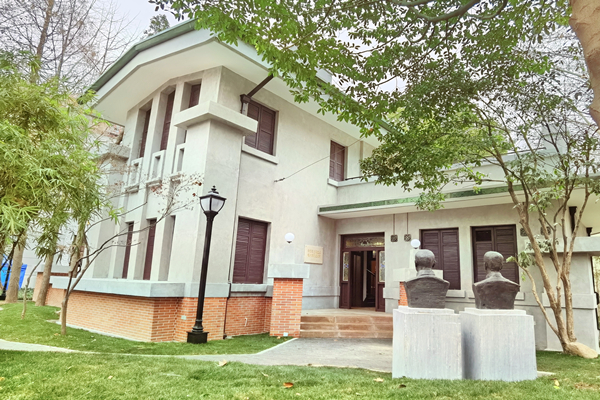
民进成立旧址纪念馆（上海）
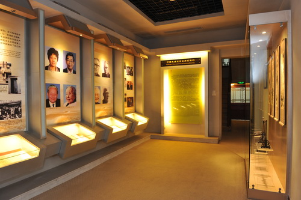
中国民主党派历史陈列馆（重庆）
王绍鏊纪念馆（江苏同里）
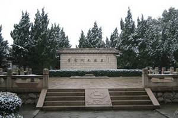
叶圣陶纪念馆（江苏甪直）
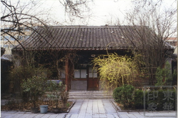
叶圣陶故居（北京）
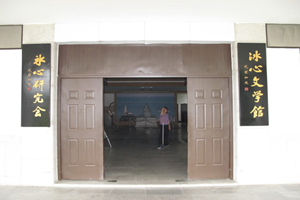
冰心文学馆（福建长乐）
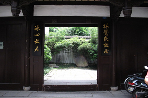
福建省冰心故居（福建福州）
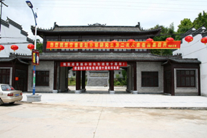
赵朴初纪念馆（安徽太湖）

无锡赵朴初纪念馆（江苏无锡）
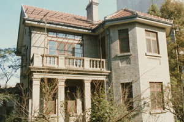
吴贻芳故居（江苏南京）
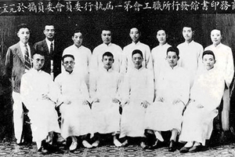
商务印书馆（北京）
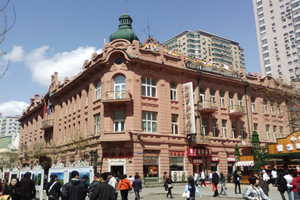
马迭尔宾馆（黑龙江哈尔滨）
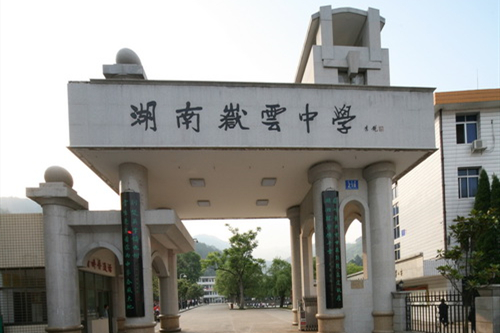
岳云中学（湖南衡阳）
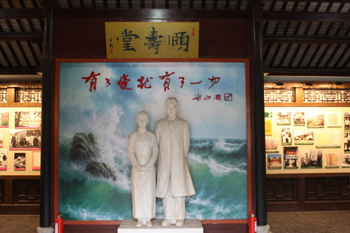
吴文藻、冰心纪念馆（江苏江阴）
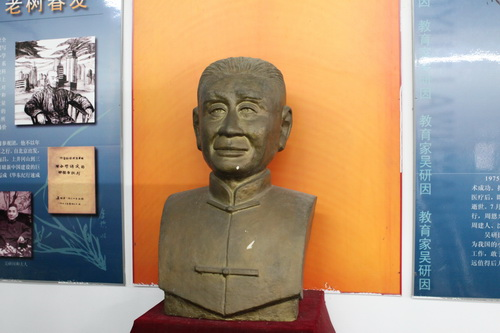
吴研因纪念馆（江苏江阴）
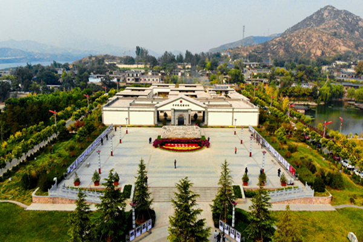
中央统战部旧址（河北平山）

马叙伦历史资料陈列馆（浙江杭州）

周建人历史资料陈列馆（浙江绍兴）

同心苑·雷洁琼祖居（广东江门）

雷洁琼铜像和生平事迹展（上海）
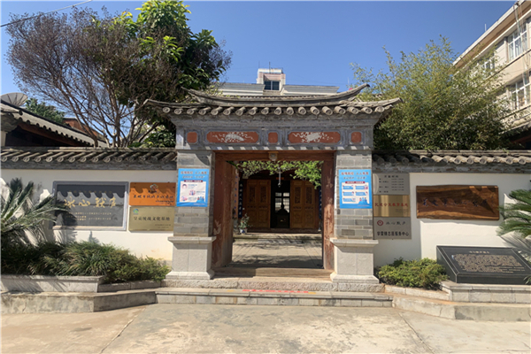
冰心默庐（云南昆明）
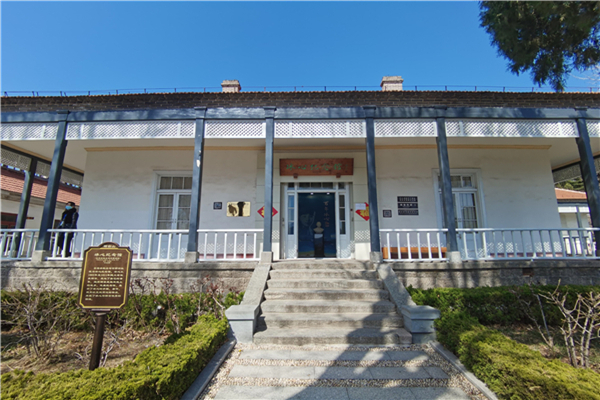
冰心纪念馆（山东烟台）
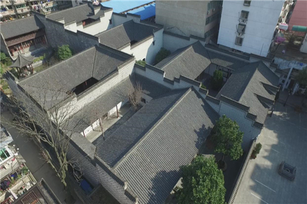
安庆市赵朴初故居陈列馆（安徽安庆）

徐伯昕事迹陈列馆（江苏常州）
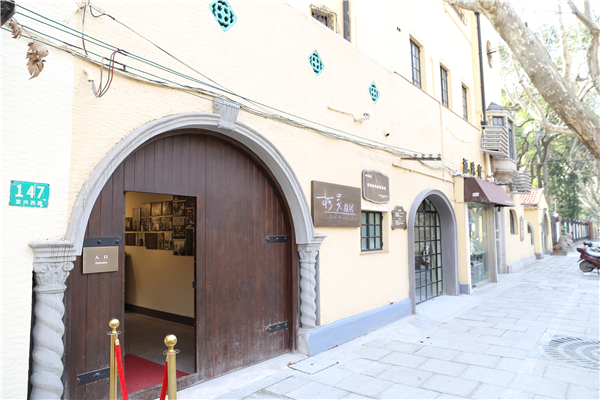
柯灵故居（上海）
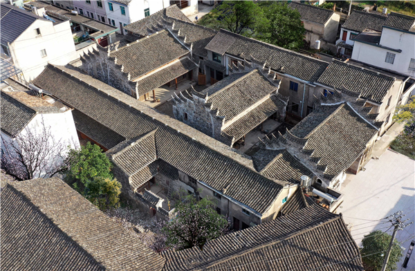
张明养纪念馆（浙江宁波）
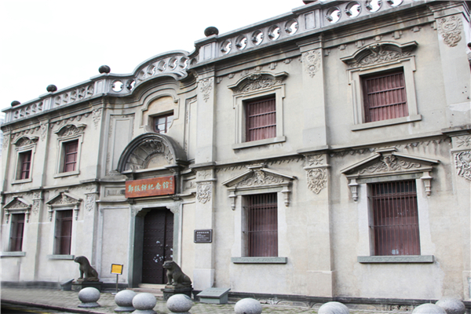
郑振铎纪念馆（浙江温州）
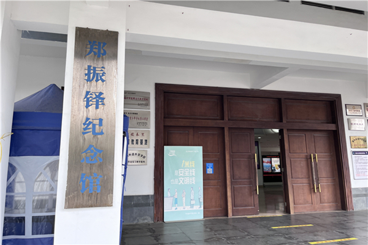
郑振铎纪念馆（福建长乐）
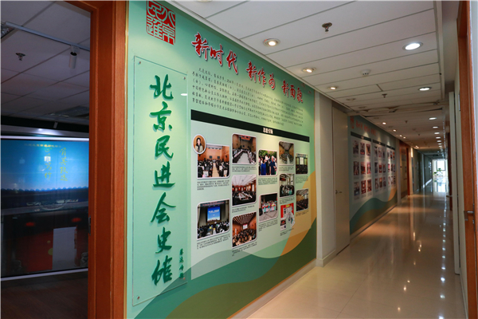
北京民进会史馆（北京）